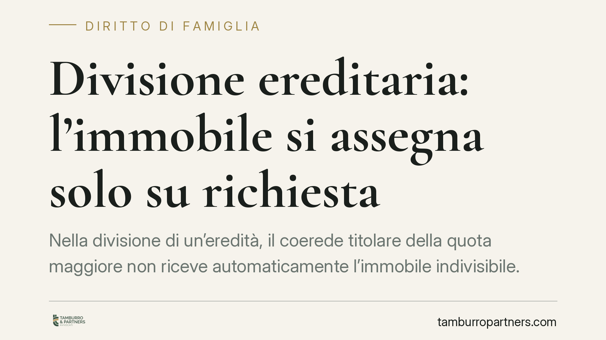

Divisione ereditaria: l'immobile si assegna solo su richiesta
Nella divisione di un'eredità, il coerede titolare della quota maggiore non riceve automaticamente l'immobile indivisibile. Secondo un orientamento consolidato, il giudice può assegnarlo solo se esiste una richiesta espressa. In assenza, la strada è la vendita all'incanto. Un principio che pesa sulle strategie di chi affronta una divisione contenziosa.

Il caso e il principio
Un immobile che non si può dividere in porzioni concrete finisce spesso al centro delle liti tra coeredi. La domanda ricorrente è: chi se lo tiene? La risposta non è scontata come sembra.
Secondo un orientamento consolidato della Corte di Cassazione Civile, il giudice della divisione non può assegnare d'ufficio l'immobile non comodamente divisibile a uno dei coeredi, nemmeno se questi è titolare della quota maggiore. L'assegnazione presuppone una richiesta esplicita. In mancanza, il bene va venduto all'incanto e il ricavato ripartito tra i condividenti secondo le rispettive quote.
Inquadramento normativo
La disciplina di riferimento è l'art. 720 del Codice civile. La norma si occupa dei beni "non comodamente divisibili": immobili che non possono essere frazionati in porzioni corrispondenti alle quote senza comprometterne il valore o la funzione.
In questi casi la legge indica una gerarchia di soluzioni. In primo luogo, il bene può essere compreso per intero nella porzione di uno dei coeredi che ne faccia richiesta, con conguaglio in denaro a favore degli altri. La preferenza va al condividente titolare della quota maggiore. Quando più coeredi con quote uguali aspirano allo stesso bene, l'assegnazione può avvenire anche mediante sorteggio. Solo se nessuno domanda l'attribuzione, si passa alla vendita all'incanto, criterio residuale previsto dallo stesso art. 720 c.c.
Il punto centrale è proprio l'iniziativa. La titolarità della quota maggiore attribuisce una posizione di preferenza, non un diritto automatico. Senza istanza, quella preferenza non opera.
Perché la distinzione conta
La ratio è tutelare l'autonomia del coerede. L'assegnazione di un immobile comporta l'obbligo di versare agli altri un conguaglio in denaro, che può essere ingente. Imporre d'ufficio questo onere significherebbe caricare il coerede di un esborso non voluto, magari sproporzionato rispetto alle sue possibilità economiche.
Avere la quota maggiore non equivale a volersi assumere quel debito. Per questo la legge richiede una manifestazione di volontà: è il coerede a valutare se gli conviene acquisire l'intero bene pagando gli altri, oppure lasciare che si proceda alla vendita.
Implicazioni pratiche
Per chi affronta una divisione ereditaria le conseguenze sono concrete.
Chi desidera trattenere l'immobile deve attivarsi. Non basta essere l'erede con la quota più consistente: occorre formulare una domanda espressa di assegnazione nel giudizio di divisione, altrimenti il bene rischia di essere venduto all'incanto, spesso a un prezzo inferiore a quello di mercato.
Chi invece non ha interesse ad acquisire l'immobile può contare sul fatto che nessun onere gli verrà imposto contro la propria volontà. La vendita all'incanto diventa l'esito quando manca ogni richiesta di assegnazione.
Sul piano economico, la vendita giudiziaria tende a realizzare valori più bassi rispetto a una compravendita ordinaria. Questo rende spesso preferibile trovare un'intesa tra i coeredi prima di arrivare all'incanto.
Cosa fare in concreto
- Verificare con precisione le quote spettanti a ciascun coerede e la natura dell'immobile, accertando se sia effettivamente non frazionabile.
- Se si intende acquisire il bene, formulare una domanda di assegnazione chiara e tempestiva nel giudizio di divisione, senza confidare nella preferenza automatica.
- Stimare in anticipo l'importo del conguaglio dovuto agli altri coeredi, per valutare la sostenibilità dell'operazione.
- Considerare le implicazioni economiche della vendita all'incanto, di norma meno vantaggiosa rispetto a una vendita di mercato.
- Valutare una strategia processuale coordinata tra i coeredi quando esiste margine per un accordo bonario, spesso più conveniente della liquidazione forzata.
Disclaimer
Contributo informativo a cura di Tamburro & Partners Avvocati - Avv. Giuseppe Tamburro. Non costituisce parere legale.
Ogni famiglia ha il suo equilibrio.
Separazione, divorzio, affidamento, assegno: se vuoi un confronto riservato su una specifica situazione, scrivi allo studio. Ti rispondiamo entro un giorno lavorativo.